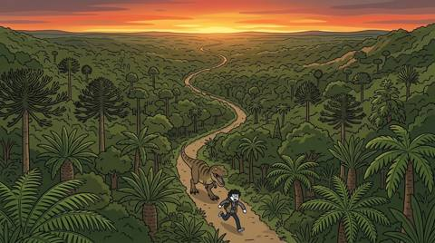

Stickman 實驗頁
EP1 第一幕（S00 黃昏森林追逐）在 Google Flow 上的畫面實驗紀錄。
2026-11-06
背景實驗紀錄
黃昏森林背景的五種效果，每個試過的做法和結果。
2026-11-06
第一幕追逐：十一種表現法
S00-1 → S00-3 暴龍從遠處追到鏡頭前，十一種畫法對照。

2026-11-07
S00-3 景別 × 相機角度
10 級景別 × 4 種角度共 160 張，加上對照官方定義的評估。